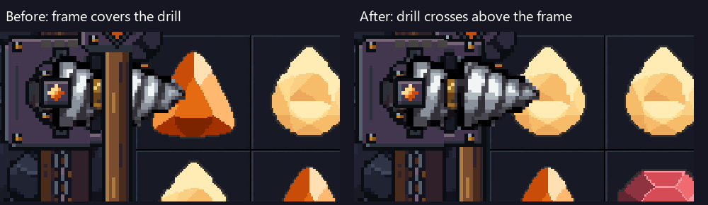
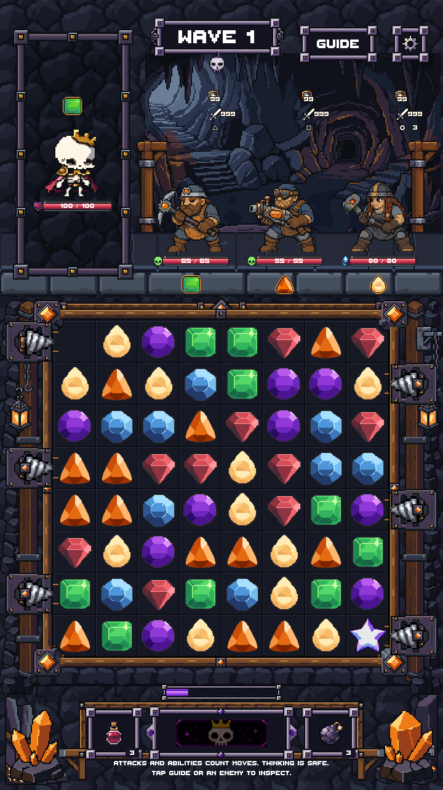

Drills above the board
The native board rim now draws below the six dispensers and their spinning projectiles. Artwork, board/frame dimensions, contact timing and gameplay rules are unchanged.

Actual Game scene rendering fixture. The two runs have different random gem arrangements; the change is render order only.
Actual Game animation
Controlled Unity combat test: two real row-drill activations with enemies held at long countdowns so the drilling can be reviewed. Left and right firing, contact hold, destruction, burst and reload use the production resolver.

Verified at 720×1280, 1080×1920, 1080×2400, tall-screen safe area and 360×640. Frame geometry and native piece scales match the original. Desktop Unity verification; no new phone-device test.